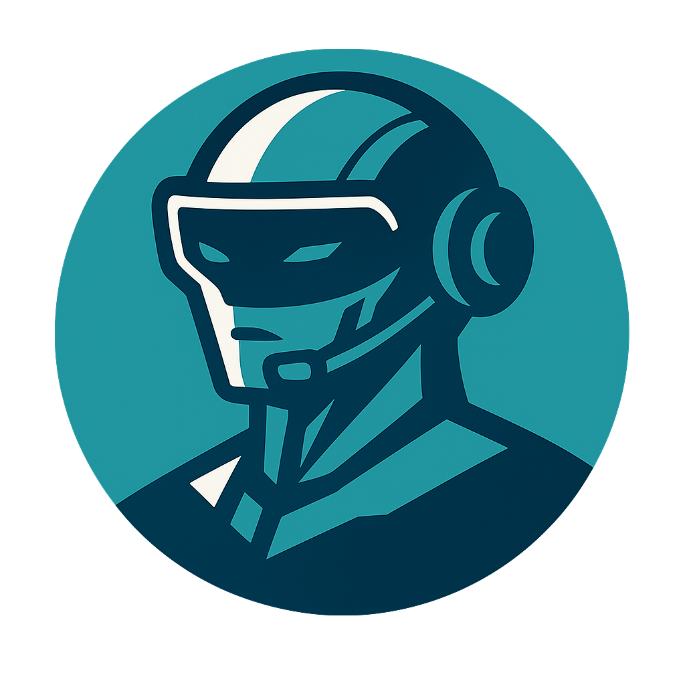

Jul-IA
Assistant IA intelligent et personnalisé


Description
Jul-IA vous accompagne dans vos tâches quotidiennes, vos projets créatifs et vos recherches. Il comprend, apprend et s’adapte à vos besoins.
Informations techniques
Taille : ~2.3 Mo
Version : 3.0
Dernière mise à jour : 13 août 2025
Installations : 0
À propos
Jul-IA est une application web progressive conçue pour être rapide, intuitive et utile au quotidien. Elle combine intelligence artificielle, design immersif et accessibilité pour tous les utilisateurs.